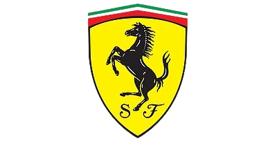

Ferrari, che dire... Ferrari è storia, Ferrari è passione, Ferrari è amore... ma è anche qualcosa di più. La Ferrari non è solo una macchina: è un’idea di perfezione che sfida il tempo. Ogni suo motore sembra avere un’anima, ogni curva una promessa di eternità. È il rosso del coraggio, il suono della libertà, la scintilla che accende il sogno di superare i propri limiti. Amare la Ferrari significa credere che la passione possa diventare arte, che la velocità possa essere poesia, e che in ogni battito di pistone ci sia il cuore di chi non smette mai di inseguire la leggenda.